# Cloudbase v5 Mobile Ui Improvments
- (Before Images/videos on the left or top, After are right or bottom.)
## Nav Menu
- Side Menu/Nav menu becomes too small when alerts are added in/ on small heights, can't see rest of quicklinks, so ive made the menu scrollable when needed, and disabled page scrolling while menu is open and ontop to prevent confusion. Ive also made the dropdowns full width to match the buttons and added a little padding
to the bottom so the bottom most button isnt on the screen edge.
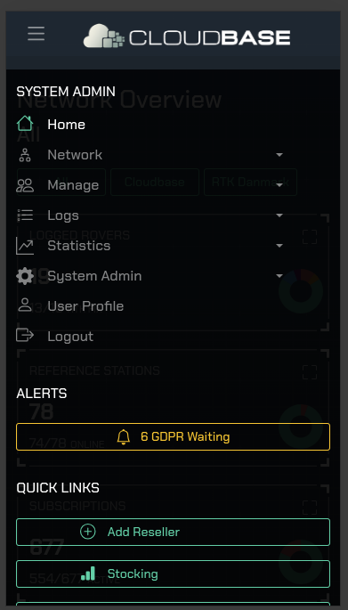
- Leaflet RTK status above menu, decreased z index.
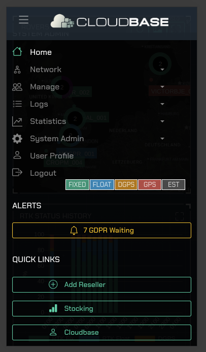
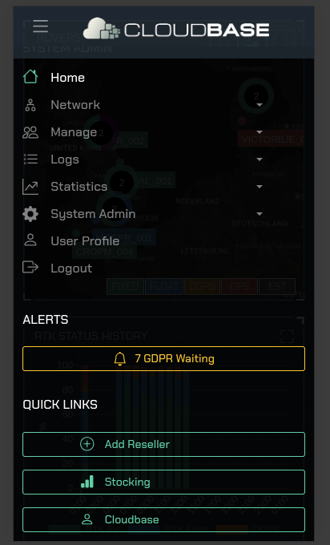
- Reduced margin around dashboard on large screens, b-container set to fluid, max width was causing issues.
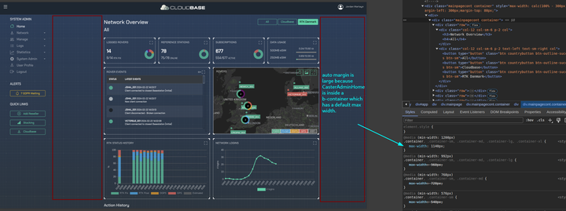
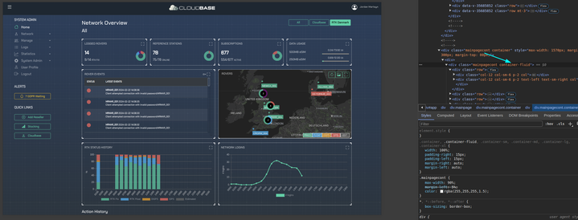
- Menu not closing on mobile when you navigate to alerts
- Menu needing to wait for alerts check to render it each time, means opening and closing menu resets it making the alerts "jump" in potentially when you will click on another item.
- Menu, changed stocking/alerts buttons in quick links/alerts to remained highlighted to
show you where you are, like the icons in the regular dropdowns.
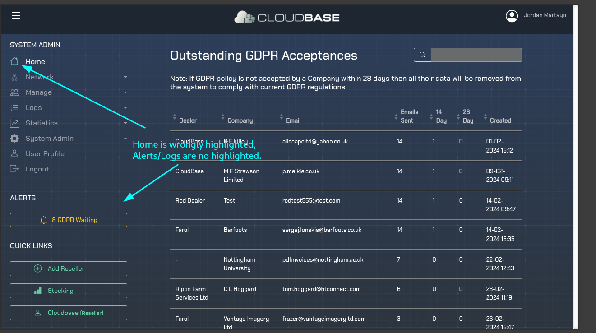
- Menu has overly large margins on wider screens, % based. set to flat 20px
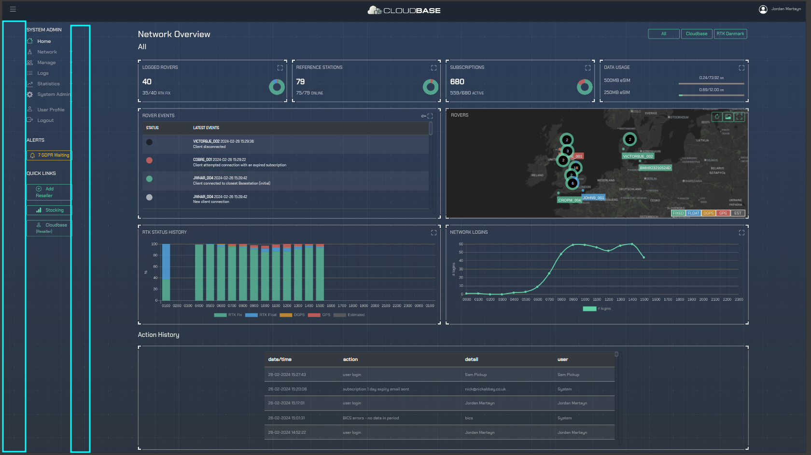
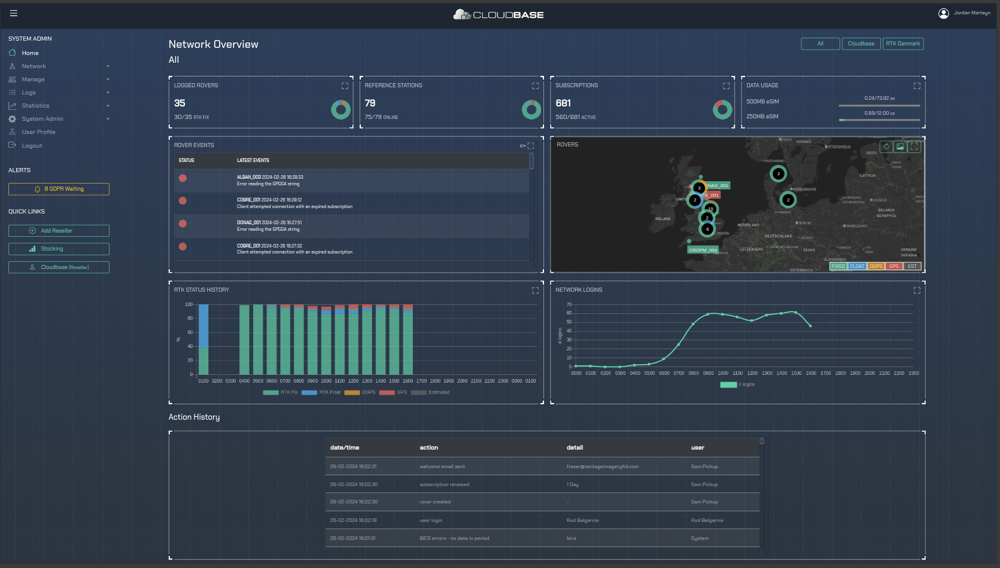
- Menu big fix, home icon not going green for dealer or reseller, they used different route that werent set up.
## Nav Dash
- Changed the navBarDashboard to work better for mobile, branding logo scales on smaller screen sizes, and profile, loses name text but now fits on small screen.
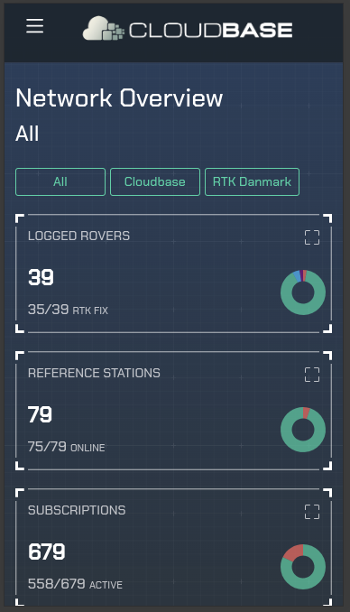
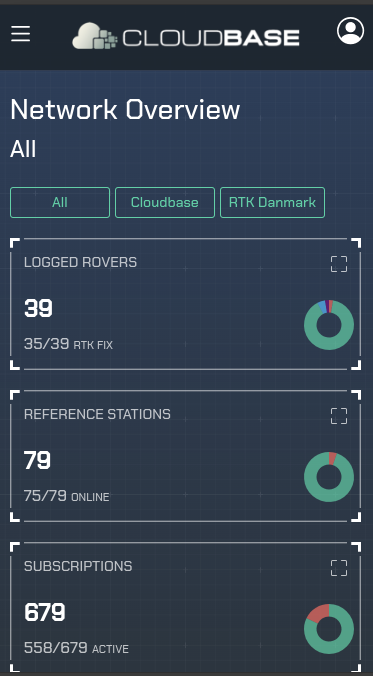
## Manage Subscriptions Table
- missing fields, they data for schedualed is different from active/expired so changed the fields to match
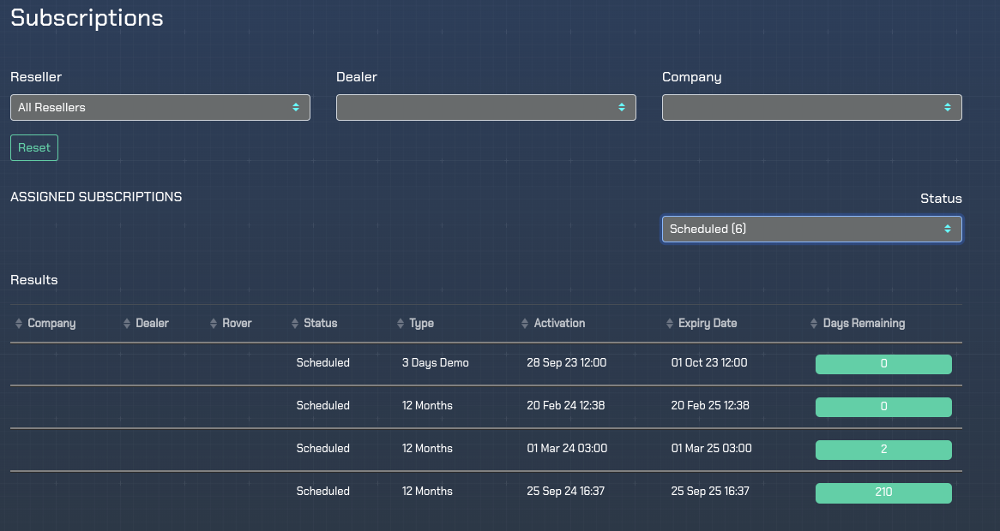
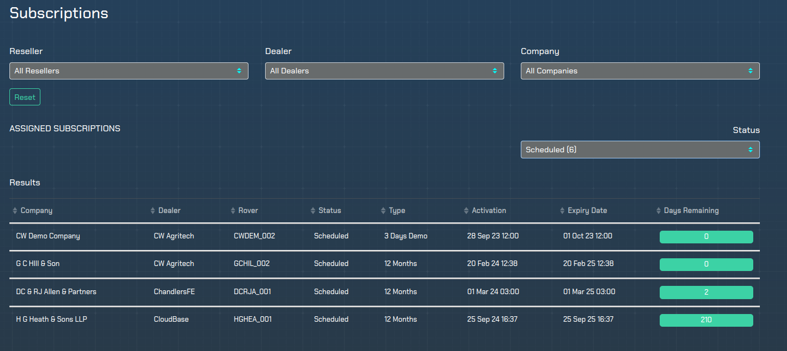
## Stocking add subs
- Changed the input type to numeric user input instead of drop down options.
## -------------------------------------------------------------------------------------------------
# TODO
## -------------------------------------------------------------------------------------------------
## Screen size issues
# on home network overview action history doesnt reszie for larger screen widths,
# network - logged rovers the pie chart doesnt fill the space on larger screens, same for refrence stations
## investigate issues
# Why is the color different in build vs development for login banner background + border radius
# manage - orders empty?
# Logs - log messages the tickbox for log bases only doesnt seem to work?
# Statistics - subscriptions doesnt seem to work, wait longer?
# system admin - system status graphs not wworking?
## New features:
# subscrition table search, rover ie
# idea menus with the carrages like details edit, should show via colour what section your on, ie in edit profile
# add branding to dealer/resller overview/table for easy image recognition?